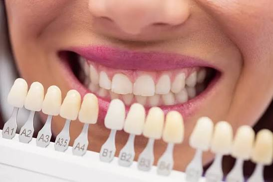
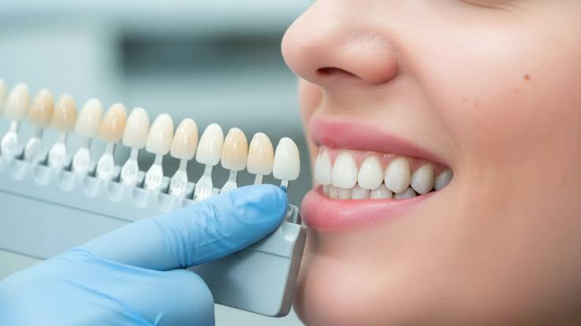

🔥 Metal Destekli Porselen Çözümlerimiz


Metal destekli porselen restorasyonlar, yüksek çiğneme basıncına maruz kalan uzun üyeli köprü çalışmalarında dayanıklılığı ve ekonomik yapısıyla diş hekimliğinin vazgeçilmez temel taşı olmaya devam etmektedir. Karaca Dental olarak bu geleneksel yöntemi modern dijital teknolojiyle yeniden yorumlayarak standartları yükseltiyoruz.
Porselenin altındaki metal altyapıyı döküm yöntemiyle değil, en son teknoloji endüstriyel lazer sinterizasyon (3D Lazer Metal Yazıcı) ünitelerimizle mikron düzeyinde sıfır hata payıyla üretiyoruz. This sayede metalin diş güdüğüne olan maruziyeti ve mekanik uyumu kusursuz hale gelir, hekimin koltuk başı uyumlama süresi kısalır. Metal yüzey üzerine fırınlanan yüksek kaliteli Avrupa menşeili dental porselen katmanları, uzman teknisyenlerimizin morfolojik el işçiliğiyle birleşerek yüksek fonksiyonel mukavemet ve optimum estetik uyumu bir arada sunar.
⬅ Ana Sayfaya Dön